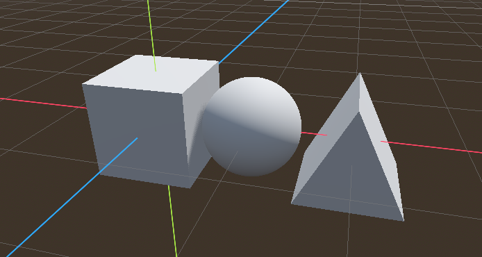

MyST reference¶
Heading 2¶
Heading 3¶
Heading 4¶
Style¶
Use two asterisks or underscores for bold.
Use one asterisk or underscore italics.
Use backquotes for
code
Lists¶
Use *, -, or + for unordered lists.
apple
banana
Use 1. for ordered lists.
apple
banana
Syntax¶
```{directivename} arguments
:key1: val1
:key2: val2
This is
directive content
```
Admonitions¶
This is my admonition
This is my note.
Caution
This is my admonition This is my note.
Danger
This is my admonition This is my note.
Error
This is my admonition This is my note.
Hint
This is my admonition This is my note.
Important
This is my admonition This is my note.
Note
Notes require no arguments, so content can start here.
Nesting directives¶
Note
The next info should be nested
Warning
Here’s my warning:
Code¶
10a = 2
11print('my 1st line')
12print(f'my {a}nd line')
Literal include¶
1extends RigidBody3D
2
3@export var mouse_sensitivity := 0.001
4@export var speed: float = 50.0
5@export var jump_impulse: float = 5.0
6
7@onready var twist_pivot: Node3D = $TwistPivot
8@onready var pitch_pivot: Node3D = $TwistPivot/PitchPivot
9
10var twist_input := 0.0
11var pitch_input := 0.0
12
13
14func _input(event: InputEvent) -> void:
15 if event.is_action_pressed("jump"):
16 apply_central_impulse(Vector3.UP * jump_impulse)
17
18 if event is InputEventMouseButton:
19 Input.set_mouse_mode(Input.MOUSE_MODE_CAPTURED)
20
21
22func _ready() -> void:
23 Input.set_mouse_mode(Input.MOUSE_MODE_CAPTURED)
24
25
26func _process(_delta: float) -> void:
27 var input := Vector3.ZERO
28 input.x = Input.get_axis("move_left", "move_right")
29 input.z = Input.get_axis("move_forward", "move_backward")
30
31 apply_central_force(twist_pivot.basis * input * speed)
32
33 if Input.is_action_just_pressed("ui_cancel"):
34 Input.set_mouse_mode(Input.MOUSE_MODE_VISIBLE)
35
36 twist_pivot.rotate_y(twist_input)
37 pitch_pivot.rotate_x(pitch_input)
38 pitch_pivot.rotation.x = clamp(
39 pitch_pivot.rotation.x,
40 deg_to_rad(-30),
41 deg_to_rad(30),
42 )
43 twist_input = 0
44 pitch_input = 0
45
46
47func _unhandled_input(event):
48 if event is InputEventMouseMotion:
49 if Input.get_mouse_mode() == Input.MOUSE_MODE_CAPTURED:
50 twist_input = -event.relative.x * mouse_sensitivity
51 pitch_input = -event.relative.y * mouse_sensitivity
start-at¶
The _ready function:
1func _ready() -> void:
2 Input.set_mouse_mode(Input.MOUSE_MODE_CAPTURED)
The _unhandled_input function
1func _unhandled_input(event):
2 if event is InputEventMouseMotion:
3 if Input.get_mouse_mode() == Input.MOUSE_MODE_CAPTURED:
4 twist_input = -event.relative.x * mouse_sensitivity
5 pitch_input = -event.relative.y * mouse_sensitivity
The _process function
1func _process(_delta: float) -> void:
2 var input := Vector3.ZERO
3 input.x = Input.get_axis("move_left", "move_right")
4 input.z = Input.get_axis("move_forward", "move_backward")
5
6 apply_central_force(twist_pivot.basis * input * speed)
7
8 if Input.is_action_just_pressed("ui_cancel"):
9 Input.set_mouse_mode(Input.MOUSE_MODE_VISIBLE)
10
11 twist_pivot.rotate_y(twist_input)
12 pitch_pivot.rotate_x(pitch_input)
13 pitch_pivot.rotation.x = clamp(
14 pitch_pivot.rotation.x,
15 deg_to_rad(-30),
16 deg_to_rad(30),
17 )
18 twist_input = 0
19 pitch_input = 0
Images¶
Include full resolution.

Image with 200px width.
{kind=link}
Math¶
Since Pythagoras, we know that \( a^2 + b^2 = c^2\).
The equation (1) is a quadratic equation.
Download¶
Download a Godot Script.
Download a Godot Scene.
Download a Godot Project.
Play the web game¶
Include the game with an iframe.
<iframe src="_static/intro/basics.html" width="100%" height="500px"
style="border:none;" allow="cross-origin-isolated"></iframe>